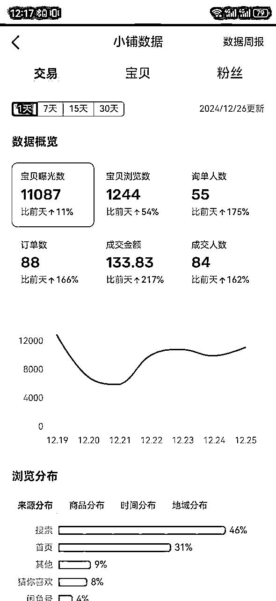
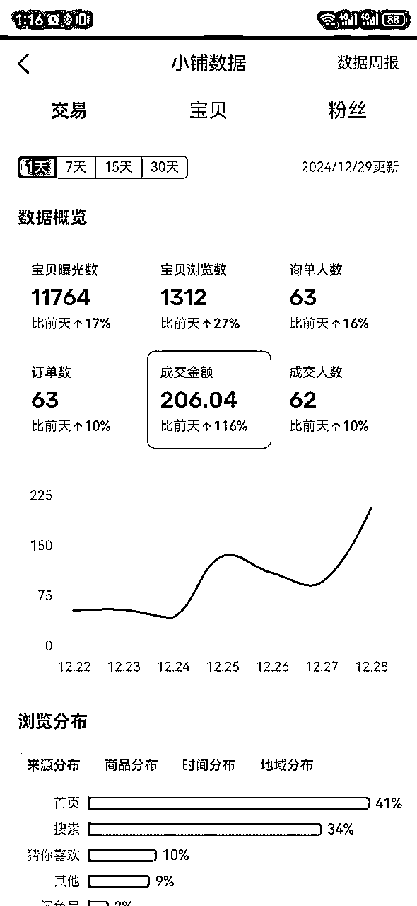
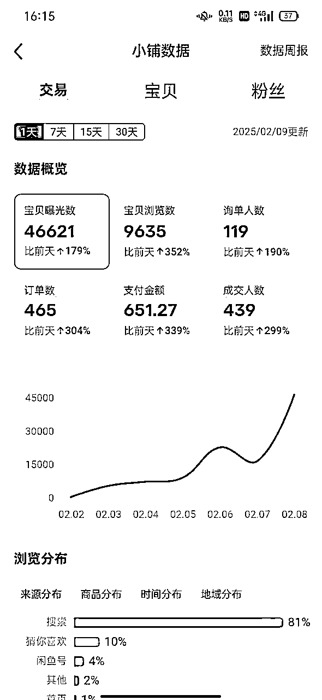
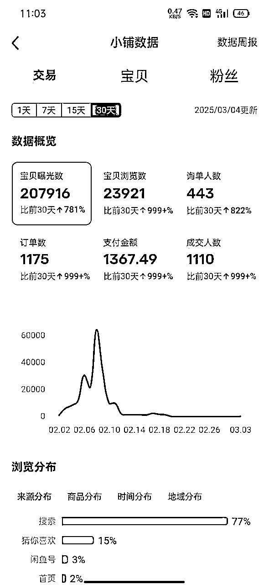

来源：https://bcrnswxww2.feishu.cn/docx/A1rvdHiTzo5TSKxo7zgcge9wn66
我是一个来自四线城市的普通上班族，80后。
2023年，我偶然加入了生财有术，今年已经是第三年了。一直以来，我和大多数圈友一样，较少分享自己的经历。但在这个社群里，我不仅提升了认知，更重要的是真的赚到了钱！
相信很多人加入生财，都是为了赚钱和提高认知的。我也不例外。2024年12月，我参加了一期航海，选择了闲鱼虚拟资源，最终不到两个月时间，就赚回了门票费用。今天，我想把自己的经历分享给和我一样的圈友。
详细内容请调转飞书：
先看成绩




（附上截图：第一个号总销售额1500+，第二个号也到了1300+加起来近3000元）
虽然这个金额不算多，但它让我实现了从0到1，真正赚到了第一块钱。
接下来，我会详细拆解整个过程，分享我的具体做法，希望对你有所启发。
新号前几天，基本上就是养号期，大约需要10-15天的时间。
这段时间，只能每天活跃账号，例如：
发布宝贝：即使没有销量，也要坚持上架
养号：其实就是要有活跃度，好收到开通闲鱼店铺的通知。
当账号开通闲鱼店铺后，就可以上传500个商品，并且设置库存。这样就不需要每次卖出后重新上架，还能绑定自动发货，极大提升效率。
如何高效上传商品？—— 让AI帮忙！
在开通闲鱼店铺后，我需要快速上架大量商品。为了节省时间，我用AI来生成商品标题和描述。
提示词示例：
提示词：
我给你一个商品介绍，请帮我写商品标题和描述。
要求：商品描述不超过300字，分为4段，包括商品亮点、适合人群、购买须知、相关话题
标题包含商品的热搜关键词，不超过30个字。
AI回答：
商品：清华大学DeepSeek使用教程（从入门到精通，本地部署安装方法）
AI生成标题：DeepSeek本地部署安装教程 | 小白进阶指南
AI生成描述：
商品亮点：DeepSeek在自然语言处理方面拥有强大能力。本地部署可定制化使用，不受网络限制，保障数据安全。
适合人群：NLP研究人员、深度学习爱好者、高校师生等。
购买须知：本教程为虚拟资源，无实体商品，需具备一定计算机基础。
相关话题：#DeepSeek #本地部署 #NLP技术
DeepSeek教程刚火的时候，我一天最高赚600块，完全超出预期！当然，这里面有运气成分，但AI的助力确实极大提高了我的效率。
关于主图：可以参考别人，再适当修改，搭配网盘截图凑够3-5张即可。当这个商品有流量很好的时候可以自己做主图。
选品方面，我的策略比较简单，基本靠运气+AI分析。
爆款商品的6个特征：
1. 目标精准——有明确的受众群体
2. 内容全面——信息量足，满足用户需求
3. 实用性强——用户买了能直接用
4. 性价比高——比市场上更便宜或更值
5. 主图吸引——有视觉冲击力，吸引点击
6. 标题优化——包含热搜关键词
第一个号的主要收入来源是B站课程合集，这个资源兼具高需求和高性价比，自然容易卖得动。
选品小技巧： 先用AI分析一个爆品的特征，然后用爆品的特征来“以爆找爆”的方式，寻找类似的产品。
资源获取渠道一个免费的资源网站（免费送福利！）
为了降低成本，我大部分资源都是免费获取的。推荐一个资源网站（注册即能下载所有内容）。
https://www.yunpanziyuan.xyz/
在闲鱼上，部分资源是违规的，比如某些课程。如果你在闲鱼搜索发现没人卖这个资源，可能是违规的，千万不要上架！
我曾经因为上架羽毛球课程，被人投诉导致封号，所以一定要注意合规性。
关于这次航海我简单说一下我个人看法
2025年的新航海已经开始了，这次大部分是AI相关项目。我看了航海的介绍，决定报名以下两个：
1. AI网站工具应用开发（长期趋势+可持续）
2. AI赋能IP，搭建个人IP（适合自己，有兴趣）
但我只会报一个，选AI网站开发，AI赋能IP可以后面单独自己去学。因为我们每个人都是精力有限，不可能有这么多精力，所以我只选1个航海。
项目能满足以下四个条件：
1. 这个项目有长期价值，至少能做3-5年
2. AI是当下最火的趋势，类似5年前的短视频
3. 符合兴趣，有热情才有动力持续做下去
4. 能赚到钱，毕竟我们的最终目的是赚钱
我利用AI分析了各个航海的特点，并结合自身优势，先排除掉不做的，然后选出几个适合自己能做的，最终选出一个航海最适合自己的方向。
很多人（包括我自己），总是间歇性努力，持续性躺平。
我们常犯的错误：三天打鱼，两天晒网，执行力不足，注意力分散这是拿不到结果的主要原因。
仅靠几篇文章/视频教程，永远只是略懂皮毛
只有系统学习 + 实战应用，才能真正掌握
一句话说的非常好：知道做不到等于不知道。
我最近看了亦仁大佬的其中有一句话让我印象深刻：
不可逆的决策要慢，而可逆的决策要快。
敢为自己的决策下重注！
也就是说，选定目标后，就别再犹豫，全力以赴去行动！
对于我们普通人来说，每天进步一点，就已经很了不起了。
不要总是纠结今天没有行动，而沮丧纠结。而是学会自洽——只要不放弃，总有一天会拿到结果！
我们往往高估一年的努力，却低估十年的积累。
最近我在看小排老师的精华帖，有句话让我感触很深：
“不是成功让你感觉良好，而是你感觉良好后，成功才会到来。”
调整好心态，让我们在这次航海见！
加油！